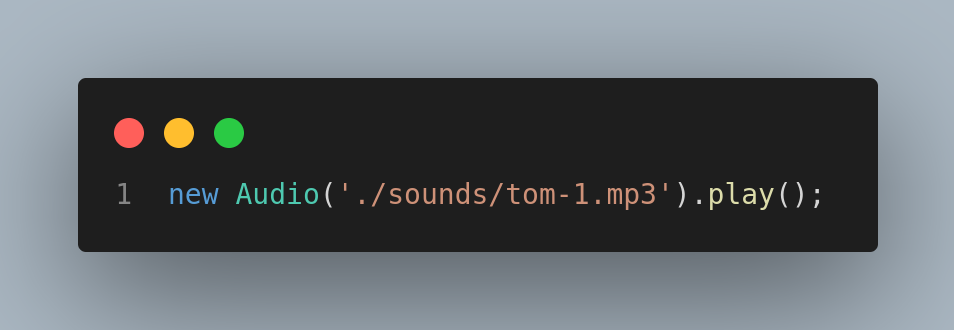
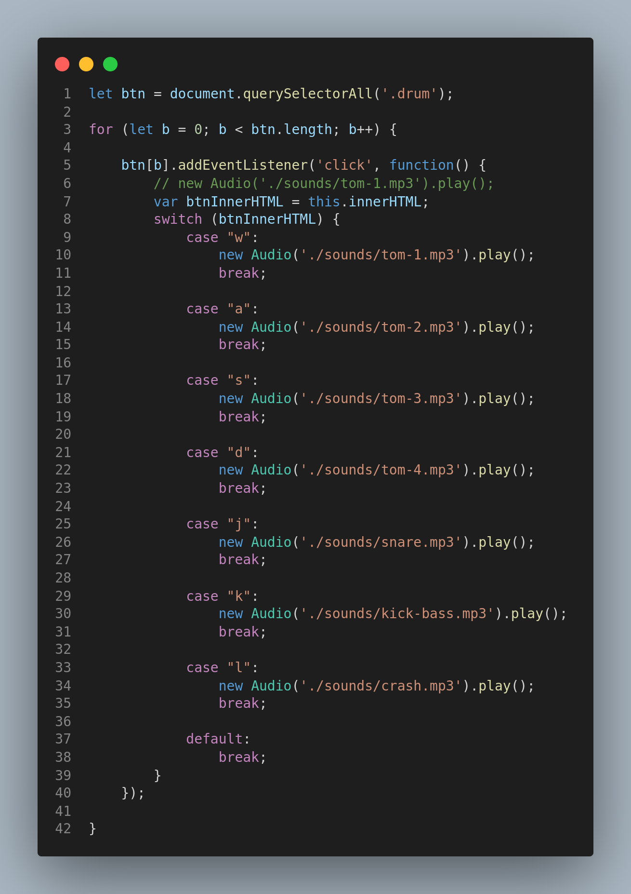
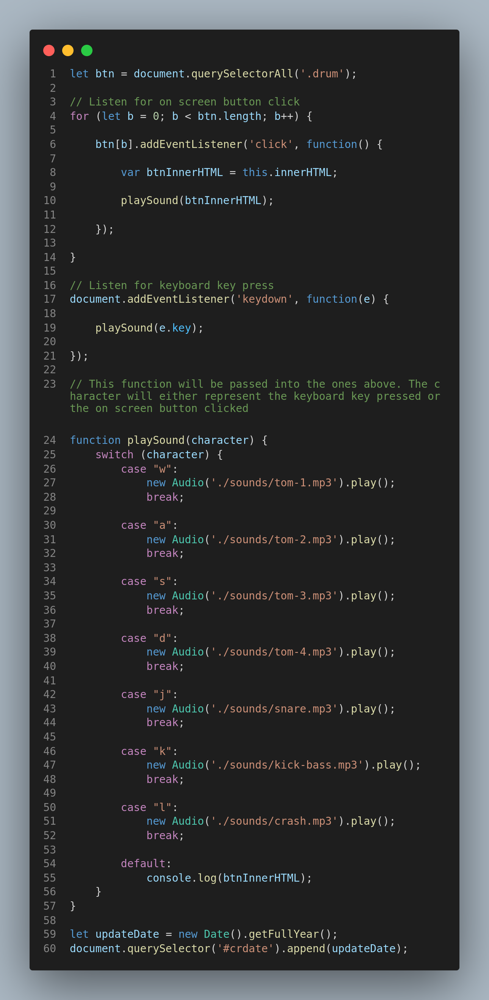

This project was built in lieu of my continued endeavour to better learn JavaScript and the DOM. I used a JavaScript for loop to targt button elements and add an event listener to each. The event listener fired off a function that on button click, a unique sound was played - using JavaScript's Audio object and the
play() method.

Inside of the event listener, I targeted the inner html for each button to use as the triggers for the
switch statement I implemented, - as opposed to
if statements.

I later went in and made three changes to enable different drum sounds to be played when certain keys are pressed on a physical keyboard. Moved the switch statement into it's own function
playSound(). I then passed this function into two other anonymous functions. One that is triggered by an on button click event listener, the second - an event listener on the document object that is triggered by a physical keyboard press - when the key pressed matches the character in any of our buttons' inner html.

To complete this project, a callback function
animateBtn() was added. For visual confirmation, the function targets the button elements on the page using thier unique class name and adds another style class to it, according to button click or key press. Inside of this function I also added JavaScripts
setTimeout() method to remove the added class after a .3 second delay.
I hope you enjoy playing with this project as much as I enjoyed building it. Now
go back and make some music 👋 !